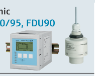
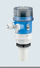
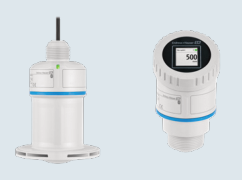

Fast Group Engineering cung cấp Prosonic S FMU90 đo lưu lượng nước thải Endress+Hauser chính hãng tại Việt Nam — đầy đủ chứng từ nhập khẩu, CO/CQ và bảo hành chính hãng.



Liên kết nên mở tiếp
Một trạm xử lý nước thải hiếm khi chỉ có một điểm đo mức. Thường có nhiều bể (bể thu, bể điều hòa, bể lắng), nhiều trạm bơm cần điều khiển luân phiên, và ít nhất một máng đo lưu lượng đầu vào/đầu ra. Thay vì gắn nhiều transmitter rời rạc, Prosonic S FMU90 là bộ điều khiển siêu âm đa kênh: một transmitter ghép tới nhiều cảm biến FDU9x để đo mức, tính lưu lượng máng hở (open channel) và điều khiển bơm — tất cả trong một hệ.
Vì sao chọn hệ đa kênh thay vì nhiều transmitter rời
Với trạm có nhiều điểm đo, giải pháp một-transmitter-một-sensor vừa tốn kém vừa khó quản lý: nhiều màn hình, nhiều điểm đấu nối, khó phối hợp logic bơm giữa các bể. FMU90 gom việc đo nhiều điểm và logic điều khiển bơm/lưu lượng về một bộ, có sẵn relay và thuật toán pump control (luân phiên, chống chạy khô, cân bằng giờ chạy). Đây là lý do nó phổ biến ở trạm xử lý nước cỡ vừa–lớn.
Thông số kỹ thuật quan trọng (theo tài liệu)
| Hạng mục | Giá trị (theo catalog/TI) |
|---|---|
| Kiến trúc | Transmitter đa kênh FMU90/95 + sensor FDU9x |
| Sensor ghép | Đến 10 sensor (tùy phiên bản FMU95) |
| Dải đo (với FDU91) | Đến 10 m |
| Độ chính xác | ±2 mm hoặc 0.08%/0.17% giá trị đo |
| Nhiệt độ quá trình (FDU91) | -40 đến +80 °C |
| Áp suất quá trình | +0.7 đến +4 bar |
| Vật liệu sensor (FDU91) | PVDF |
| Đầu ra / truyền thông | 1/3/6 relay; HART / PROFIBUS DP |
| Tính năng | Đo lưu lượng open channel, điều khiển bơm, cảnh báo, point-level |
Lưu ý biên tập: số kênh, dải đo và tính năng phụ thuộc phiên bản FMU90 vs FMU95 và loại sensor FDU9x ghép vào. BẮT BUỘC đối chiếu TI của transmitter và của từng sensor theo mã đặt hàng; FDU91 là bản 10 m tiêu chuẩn, các bản khác (FDU92 20 m, FDU95 45 m, FDU91F chịu nhiệt) có dải và điều kiện khác nhau.
Việc chọn đúng cặp transmitter–sensor là mấu chốt: FMU90 (đến 5 sensor) đủ cho phần lớn trạm; FMU95 mở rộng tới 10 sensor cho hệ lớn. Sensor FDU91 (10 m, PVDF) là lựa chọn cân bằng cho nước/nước thải phổ thông.
Đo lưu lượng máng hở (open channel) & điều khiển bơm
Hai chức năng "đắt giá" nhất của FMU90 ở trạm nước:
- Open channel flow: đo mức nước trên máng Parshall/venturi hoặc đập tràn (weir), rồi tính lưu lượng theo đường đặc tuyến chuẩn tích hợp sẵn. Đây là cách đo lưu lượng nước thải phổ biến và tiết kiệm nhất.
- Pump control: dùng mức bể để điều khiển nhóm bơm — luân phiên để cân bằng giờ chạy, chống chạy khô, và tối ưu số lần khởi động (giảm mài mòn bơm).
Kinh nghiệm lắp đặt & lỗi thường gặp
- Vùng mù (blocking distance): siêu âm có vùng mù ngay dưới mặt sensor; lắp đủ cao so với mức đầy tối đa.
- Bọt và hơi: lớp bọt dày hoặc hơi/sương nặng làm suy giảm phản xạ siêu âm — nếu môi trường nhiều bọt, cân nhắc radar không tiếp xúc.
- Bù nhiệt độ: vận tốc âm phụ thuộc nhiệt độ; FDU9x có cảm biến nhiệt tích hợp — đảm bảo không bị bức xạ nhiệt cục bộ (nắng chiếu trực tiếp).
- Máng đo: độ chính xác lưu lượng phụ thuộc lắp đặt máng đúng thủy lực (đoạn ổn định dòng phía trước) hơn là bản thân cảm biến.
Ưu điểm, hạn chế, khi nào KHÔNG dùng
Ưu điểm: quản lý nhiều điểm đo trong một bộ, sẵn logic pump control và open channel flow, chi phí trên mỗi điểm đo thấp khi có nhiều bể, không tiếp xúc nên bảo trì thấp.
Hạn chế / không phù hợp: siêu âm nhạy với bọt/hơi/gió mạnh — môi trường nhiều bọt nên dùng radar (FMR20B). Điểm đo đơn lẻ, đơn giản thì FMU30 kinh tế hơn. Cần đo lưu lượng có áp trong ống kín → dùng lưu lượng kế điện từ, không phải open channel.
Hiệu quả kinh tế (TCO)
Ở trạm nhiều bể và nhiều bơm, giá trị của FMU90 không nằm ở phép đo mức đơn thuần mà ở logic điều khiển bơm và đo lưu lượng gộp chung: giảm số thiết bị, giảm điểm hỏng hóc, tối ưu vận hành bơm (ít khởi động hơn = bơm bền hơn). Tổng chi phí sở hữu thường thấp hơn so với lắp rời từng transmitter cộng bộ điều khiển bơm riêng.
FastGroup hỗ trợ gì
FastGroup cung cấp thiết bị Endress+Hauser chính hãng tại Việt Nam. Với Prosonic S FMU90 + FDU91, chúng tôi hỗ trợ: tư vấn chọn FMU90/95 và loại sensor FDU9x theo số điểm đo và dải đo, cấu hình logic bơm và open channel, đối chiếu datasheet TI theo mã đặt hàng, hỗ trợ nhập khẩu và cung cấp CO/CQ theo từng đơn hàng, hỗ trợ commissioning.
Kết luận & liên hệ
Cho trạm xử lý nước thải nhiều điểm đo và cần điều khiển bơm/lưu lượng, Prosonic S FMU90 ghép FDU91 là giải pháp siêu âm đa kênh gọn và kinh tế. Để chọn đúng cấu hình transmitter–sensor và nhận báo giá chính hãng, liên hệ FastGroup.
Câu hỏi thường gặp (FAQ)
1. FMU90 ghép được bao nhiêu sensor? Tùy phiên bản — FMU90 tới 5, FMU95 tới 10 sensor; kiểm tra TI theo mã đặt hàng.
2. FDU91 đo được bao xa? Dải tiêu chuẩn tới 10 m; cần xa hơn thì dùng FDU92 (20 m) hoặc FDU95 (45 m).
3. Có đo lưu lượng nước thải được không? Có — đo mức trên máng Parshall/weir rồi tính lưu lượng open channel theo đặc tuyến tích hợp.
4. Môi trường nhiều bọt thì sao? Siêu âm suy giảm với bọt/hơi nặng — nên cân nhắc radar không tiếp xúc FMR20B.
5. Có đầy đủ CO/CQ không? FastGroup cung cấp hàng chính hãng kèm CO/CQ và giấy tờ nhập khẩu theo từng đơn hàng.
Nguồn tham khảo
- Endress+Hauser – Level measurement selection (CP00023F00EN2126)
- Endress+Hauser – Technical Information TI00397F/398F (FMU90/95), TI01470F (FDU91), endress.com (đối chiếu theo mã đặt hàng)
Nhận báo giá Endress+Hauser chính hãng
Gửi mã model, điều kiện quá trình, kết nối và yêu cầu chứng nhận qua email minhduc@fastgroup.vn hoặc Zalo/điện thoại (+84) 938 888 958. Hoặc gửi RFQ qua biểu mẫu và tra mã model trực tiếp trên trang.